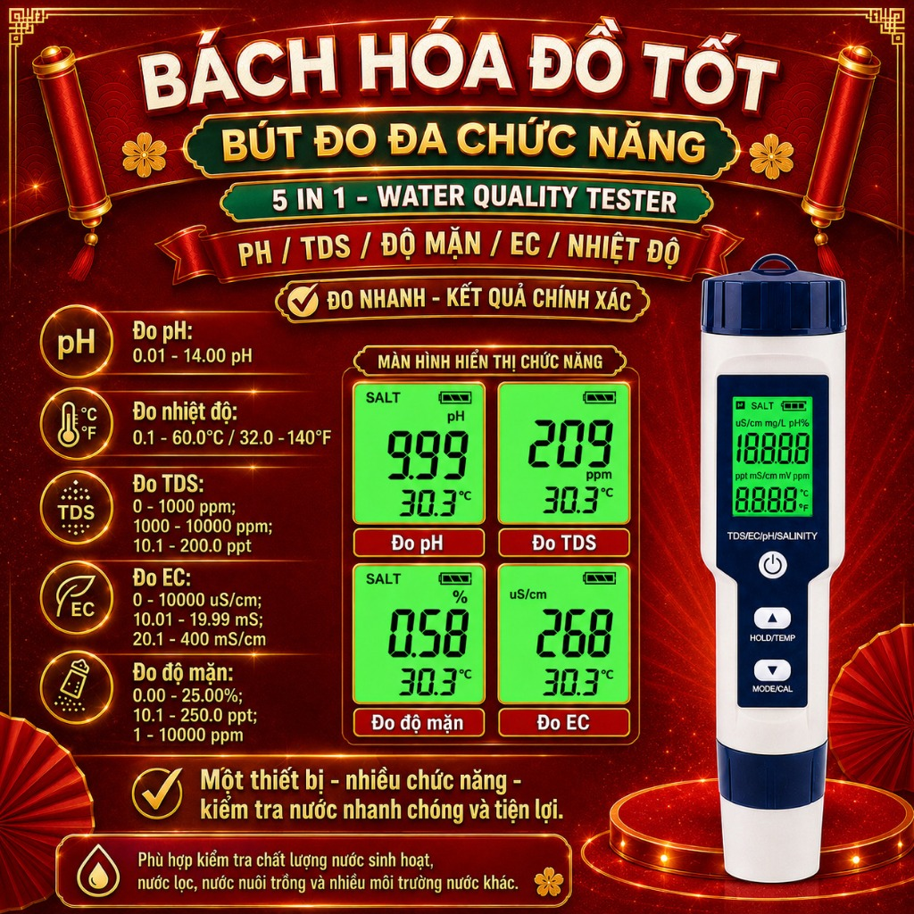
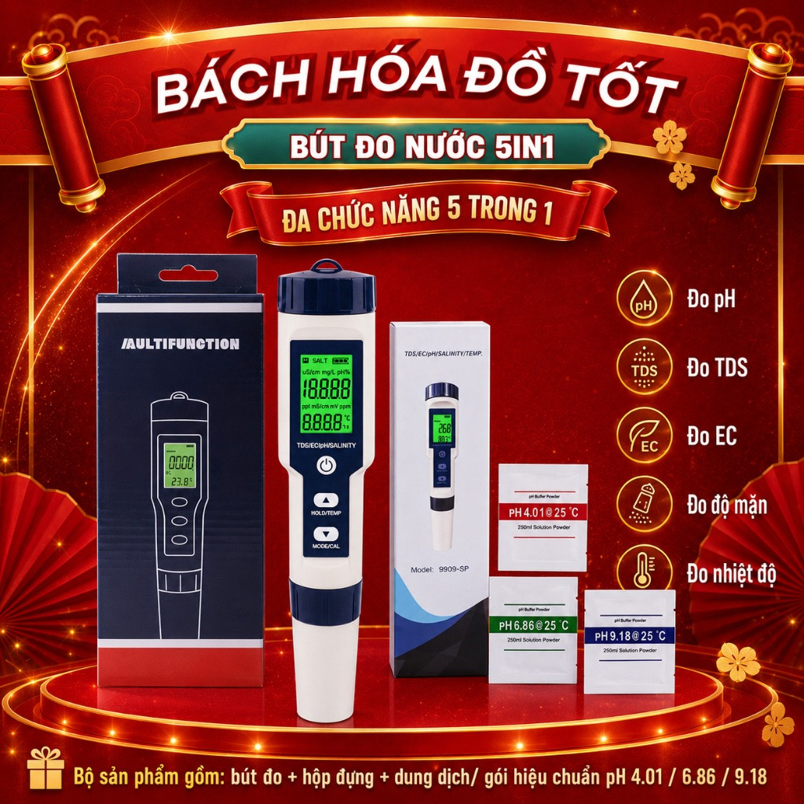
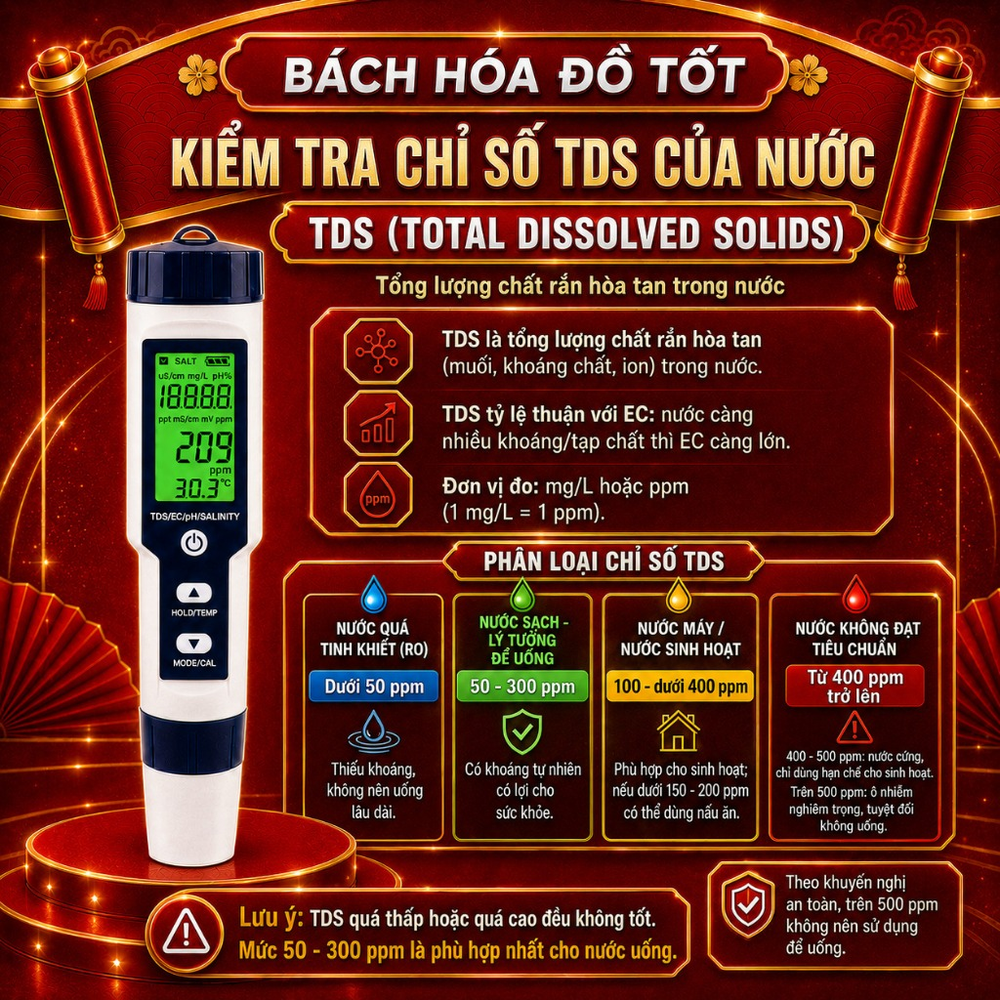

Cảnh Báo: 90% Cá Lươn Chết Sốc Nước Do Dùng Bút Đo pH Rởm! Top 3 Bút Đo Chuẩn 100% 2026
Tác giả: Kỹ Thuật Viên Nông Nghiệp | Cập nhật lần cuối: Tháng 7/2026
📌 Tóm Tắt Nhanh Cho Chủ Trang Trại:
Sốc pH và sai lệch độ mặn là nguyên nhân hàng đầu khiến lươn không đất, cá chạch lấu bỏ ăn và chết hàng loạt chỉ sau 1 đêm. Để bảo vệ đàn nuôi, bà con bắt buộc phải trang bị bút đo pH / Độ mặn điện tử chuẩn xác có tính năng tự động bù nhiệt (ATC) và chống nước IP67. Bút đo chuẩn giúp kiểm soát môi trường nước tức thì, tiết kiệm hàng chục triệu tiền thuốc xử lý.
⚠️ NỖI ĐAU THỰC TẾ: Rất nhiều bà con tiếc vài chục ngàn mua phải loại bút đo rẻ tiền trôi nổi trên mạng. Kết quả: Bút báo pH 7.5 nhưng thực tế nước đã nhảy lên 9.0! Cá lươn bị tuột nhớt, bỏ ăn rồi chết trắng bể. Đừng để "tiền mất tật mang" chỉ vì một thiết bị đo sai lệch!
I. Bảng So Sánh Top 3 Thiết Bị Đo Môi Trường Thủy Sản Chuẩn Nhất
| Tên Thiết Bị Đo |
Chức Năng Đo Chính |
Độ Chính Xác |
Khả Năng Chống Nước |
Phù Hợp Cho |
| Bút Đo pH / Độ Mặn Đa Năng |
pH, Độ mặn, TDS, EC, Nhiệt độ |
±0.01 pH (Cực cao) |
Chuẩn IP67 chống nước tốt |
Chuyên nghiệp: Bể lươn, ao tôm, cá chạch |
| Bút Đo pH Thủy Sản Chuyên Dụng |
Chuyên đo pH & Nhiệt độ |
±0.05 pH |
Chống nước bề mặt |
Hộ nuôi lươn, cá cảnh, cá thịt |
| Bút Đo EC / TDS Kiểm Tra Nước |
Đo tổng chất rắn hòa tan (TDS/EC) |
±2% F.S |
Tiêu chuẩn |
Kiểm tra nguồn điện đọt, nước sông/giếng |
II. Review Chi Tiết Top 3 Bút Đo Môi Trường Đáng Mua Nhất Trên Shopee
🔥 KHUYÊN DÙNG: ĐA NĂNG & CHUẨN XÁC NHẤT
1. Bút Đo pH / Độ Mặn / TDS / EC Đa Năng Cho Thủy Sản

Dòng bút đo chuyên nghiệp được các kỹ sư thủy sản khuyên dùng. Tích hợp 5 trong 1 giúp bà con kiểm tra ngay lập tức độ mặn, độ pH và mật độ khoáng chất trong nước ao nuôi chỉ với 1 lần nhúng.
- Đặc điểm nổi bật: Cảm biến điện cực thủy tinh siêu nhạy, màn hình hiển thị số điện tử rõ ràng ngay cả dưới trời nắng.
- Tính năng ATC: Tự động bù nhiệt độ, cho kết quả chuẩn xác tuyệt đối không bị sai lệch theo thời tiết.
👉 XEM GIÁ ƯU ĐÃI CHÍNH HÃNG TRÊN SHOPEE
⭐ CHUYÊN DỤNG CHO BỂ LƯƠN & AO CÁ
2. Bút Đo pH Nước Điện Tử Chuẩn Xác Tự Động Hiệu Chỉnh

Thiết kế nhỏ gọn, chuyên dụng để đo chỉ số pH - yếu tố sống còn khi nuôi lươn không đất và cá giống. Máy phản hồi kết quả cực nhanh trong 3 giây.
- Đặc điểm nổi bật: Thao tác đơn giản chỉ bằng 1 nút bấm. Có chế độ hiệu chỉnh tự động đi kèm gói chuẩn độ.
- Độ bền: Đầu dò được bảo vệ bằng nắp đậy chắc chắn, tránh va đập khi mang đi quanh ao.
👉 MUA BÚT ĐO pH CHUẨN GIÁ MỀM TẠI SHOPEE
💡 KIỂM TRA NGUỒN NƯỚC ĐẦU VÀO
3. Thiết Bị Đo Căng Thẳng Môi Trường Nước (TDS / EC Meter)

Giúp bà con đo mức độ phèn, kim loại nặng và tổng chất rắn hòa tan trong nước sông trước khi bơm vào bể nuôi lươn, nuôi cá.
- Đặc điểm nổi bật: Tiết kiệm pin, tự động tắt sau 5 phút không sử dụng. Dễ xài cho mọi lứa tuổi.
- Ứng dụng: Kiểm tra nước giếng khoan, nước sông rạch trước khi xử lý hóa chất.
👉 KÍCH HOẠT MÃ GIẢM GIÁ SHOPEE TẠI ĐÂY
III. Bảng Sự Cố Thường Gặp Khi Dùng Bút Đo pH & Cách Khắc Phục
| Hiện Tượng Lỗi |
Nguyên Nhân Chính |
Cách Khắc Phục Nhanh |
| Số nhảy liên tục không dừng |
Đầu đùn/điện cực bị dính bẩn hoặc hết pin. |
Rửa sạch đầu đo bằng nước cất, lau khô nhẹ và thay pin mới. |
| Đo sai lệch kết quả thực tế |
Lâu ngày chưa hiệu chỉnh (hiệu chuẩn) lại bút. |
Pha gói bột chuẩn độ pH (4.01, 6.86) vào nước cất và bấm nút CAL để chỉnh lại. |
| Màn hình không hiển thị |
Hết pin hoặc vắt pin bị rỉ sét do ẩm. |
Tháo nắp pin, vệ sinh lò xo tiếp xúc và thay pin cúc áo mới. |
IV. Mẹo Sử Dụng Bút Đo pH Bền Trên 5 Năm Cho Nông Dân
- Sau mỗi lần đo: Rửa sạch đầu bút bằng nước sạch (hoặc nước cất), lau khô bằng giấy mềm. Không chạm tay vào bóng đèn thủy tinh ở đầu đo.
- Bảo quản đầu đo: Luôn giọt vài giọt dung dịch bảo quản (hoặc nước sạch) vào nắp đậy để giữ cho cảm biến điện cực không bị khô.
- Định kỳ hiệu chuẩn: Nên hiệu chỉnh lại bút 1 tháng/lần nếu sử dụng đo liên tục hàng ngày.